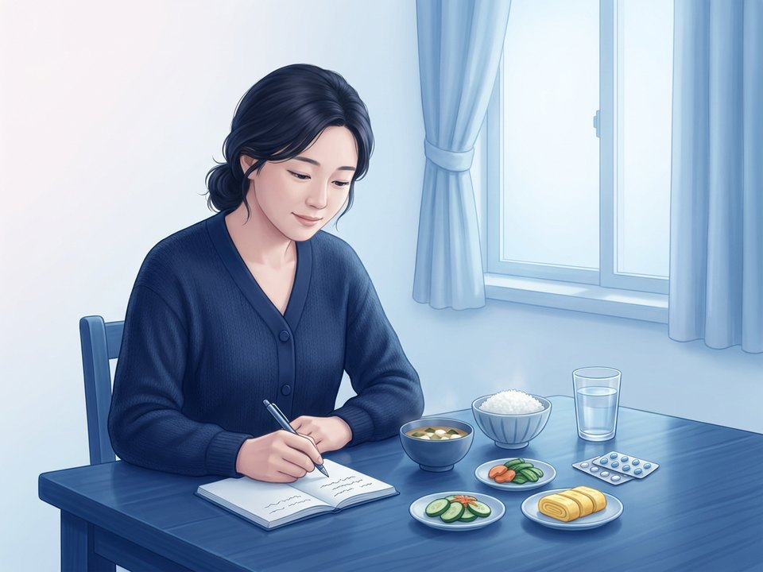

위장 증상으로 먼저 오는 편두통
두통 하루이틀 전의 메스꺼움·식욕 변화, 발작 중 위가 느려져 먹은 약이 잘 안 듣는 것, 두통 없이 반복되는 복통·구토도 편두통의 한 모습일 수 있습니다. 내시경·복부 검사가 정상인데 이런 증상이 발작처럼 되풀이되면 진료 때 말씀해 주세요. 편두통은 4~72시간 이어지는 두통이 ①한쪽 ②욱신거림 ③중간 이상 세기 ④움직이면 심해짐 중 두 가지 이상이고, 메스꺼움·구토나 빛·소리 과민이 함께 오는 발작이 5번 이상 되풀이될 때 진단합니다.
두통일기 — 적어서 다음 진료 때 가져오세요

| 적을 것 | 예시 |
|---|---|
| 날짜·시각 | 시작한 때와 끝난 때 |
| 강도 | 0(없음)~10(가장 심함) 중 몇 점인지 |
| 유발 요인 | 잠 부족·늦잠, 끼니 거름, 생리, 스트레스, 술·음식, 날씨 |
| 먹은 약 | 약 이름·먹은 시각·효과가 있었는지 |
| 함께 온 증상 | 메스꺼움·구토, 빛·소리가 거슬림, 체한 느낌 |
오늘부터 실천할 7가지
| ① 두통일기 쓰기 — 날짜·강도·유발 요인·먹은 약 | ⑤ 발작이 시작되면 처방받은 약을 바로 — 참다 먹으면 효과가 떨어집니다 |
| ② 매일 같은 시각에 자고 일어나기 (주말 포함) | ⑥ 진통제는 한 달에 10일 이하 — 약물 과용 두통 예방 |
| ③ 끼니 거르지 않기 · 물 충분히 마시기 | ⑦ 걷기 같은 유산소 운동을 꾸준히 · 명상·요가 |
| ④ 카페인은 일정하게 — 갑자기 늘리거나 끊지 않기 | 메스꺼움이 심하면 구토를 줄이는 약(진토제)을 함께 처방받을 수 있습니다 |
두통약을 한 달에 10일 넘게 먹으면 두통이 더 잦아지는 '약물 과용 두통'이 올 수 있습니다.
발작이 한 달 4번 이상이거나 일상이 힘들면 예방약을 상담하세요.
발작이 한 달 4번 이상이거나 일상이 힘들면 예방약을 상담하세요.
- 벼락 두통 — 몇 초 만에 극심해짐 · 50세 이후 처음 시작된 두통 · 열·목 뻣뻣함이 함께 옴
- 한쪽 마비·말이 어눌함·시야가 가려짐 · 며칠~몇 주에 걸쳐 점점 심해짐 · 기침·재채기에 심해짐
함께 보기 — 진료실에서 보신 설명 자료 「편두통 — 위장 증상에 가려진 진짜 원인」 edu.gwanggyobarun.com/decks/neurology/migraine/diagnosis/